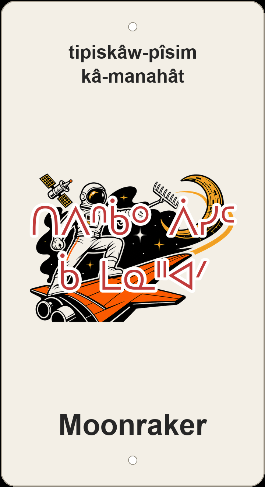

"one who rakes/gathers the moon"

3D-printed Moonraker sign — Bond-era space-spy screenprint with an astronaut, orange shuttle wing, crescent station arc, and a garden rake as the orbital trail.
The English trail nickname Moonraker comes from the 1979 James Bond space-opera film — and, older still, from smugglers said to rake moonlight to guide ships — but riders here also hear the rural prank called "mooning." The carved plaque does not transliterate the English; it reads tipiskâw-pîsim kâ-manahât — "one who rakes/gathers the moon." The first half names the target: tipiskâwi-pîsim, the moon understood as the night-sun. The second half, kâ-manahât, is a relative clause built on manah- "gather, scrape up, rake together" — the same scrape-and-gather image as a garden rake dragged across a yard, only aimed at the sky.
That absurd rake is not an accident. The screenprinted sign icon is a deliberate Bond homage: a white-suited astronaut spy on a bold orange shuttle wing, a crescent moon bent like a space-station arc, and the rake hidden in plain sight as the orbital trail. Manah- keeps the joke honest in Cree — you are not politely "visiting" the moon, you are scraping it toward you. A sister rendering, pîsim omanahikêw (the moon-gatherer), stresses the fool who digs for something unreachable; itê-pîsim (reaching for the moon) stresses the impossible grab. The plaque chose the rake verb on purpose.
In Gold Bar/Capilano Park the pun trails talk to each other. Nearby Kêsal pimipahtâwin (Kessel Run) brags a Star Wars speed run while Moonraker tips its hat to Bond — two blockbuster space plots on the same hillside. The same network holds Mârk Mesiye (Mark Messier), Kapilâno wâwiyêyâw (Capilano Crescent), opamê-meskanaw (Sideline), têpwêwin mîna kitowin (Hoot and Holler), kâ-ayâhastêk atoskêwin (Risky Business), okîmotisk-atoskêw (Hustler) and okîmotisk amaciwêwin (Hustler Uphill), osâwâ-sôniyâw omonahikêw (Gold Digger), and cimâsin mîna wîhkasin (Short 'n Sweet) — English nicknames with nêhiyawêwin names set beside them on the land.
This sign sits on ᓀᐦᐃᔭᐤ ᐊᐢᑭᕀ Nêhiyaw-Askiy — Plains Cree territory, Treaty 6, a homeland of the Métis Nation.
About 778 m of mellow singletrack in Gold Bar/Capilano Park — only 7 m of ascent and 2 m of descent — a low-profile connector in a neighbourhood dense with pun-named trails. Tap through to Trailforks (moonraker-40151) for the full map and 64-point GPX track.
Explore the trail on Trailforks, with a local preview from the uploaded GPX.
Foolish over-reacher — comedic. pîsim 'moon/sun' + omanahikêw 'one who gathers/digs'.
Romantic/impossible-desire reading. Idiom of grasping at the moon for an impossible task.
| English | SRO | Syllabics |
|---|---|---|
| one who rakes/gathers the moon (the plaque) | tipiskâw-pîsim kâ-manahât | ᑎᐱᐢᑳᐤ ᐲᓯᒼ ᑳ ᒪᓇᐦᐊᐟ |
| the moon-gatherer | pîsim omanahikêw | ᐲᓯᒼ ᐅᒪᓇᐦᐃᑫᐤ |
| reaching for the moon | itê-pîsim | ᐃᑌ ᐲᓯᒼ |
| moon (night-sun) | tipiskâw-pîsim | ᑎᐱᐢᑳᐤ ᐲᓯᒼ |
| sun, moon | pîsim | ᐲᓯᒼ |
| gather, scrape up, rake (root) | manah- |
SRO uses ê î ô â. Syllabics match the SRO shown.
Dialectal preferences may affect minor spelling choices; check local norms for signage.
References: itwêwina, Online Cree Dictionary, Plains Cree Dictionary
Each sign is 3D printed in Edmonton. Want one for your own trail, cabin or wall? Email hello@nehiyomtb.ca.